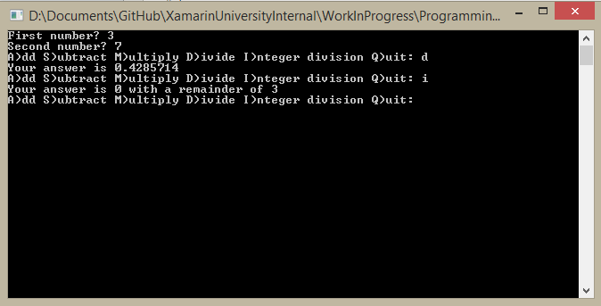

Duration
15 minutes
Lab goals
In this exercise, you will add an additional calculation into the Calculator class that you began in Part 1. This part adds method overloading and return values to your class. The high-level goals for the exercise are listed below:
- Provide an overloaded version of the
Dividemethod to perform integer division. - Return the result of each calculation from each method as a return value instead of setting the field like you did in the first exercise.
- Update the
Mainmethod using theCalculatorto support the new division method and the return result value.
Below is sample output from the finished application - notice the new "I" option.
Required assets
The provided Lab 02 Resources folder contains resources that you will need in order to complete the lab:
- The Lab2.Start folder contains a starter solution you can use if you did not do the previous exercise, or if you would like to begin with a fresh project.
- The Lab2.Completed folder contains a completed version of the lab you can use to check your work.
Please make sure you have this folder before you begin.
Steps
Here are step-by-step instructions for completing this exericise. You can also utilize the high-level goals defined above to work through the code, relying on the below instructions to fill in any necessary details.
Implement method overloading in the Calculator class
In this section, you will build on the previous Calculator application by creating a method with the same name but different paraments inside the Calculator class.
- You can continue on from your previous exercise, or open the starter Calculator.sln contained in the Lab 02 Resources folder.
-
Open the Calculator.cs source file and add a new version of the
Dividemethod that takes two integers as parameters and returns nothing (void).- Use the name
Divide, even though the class already has a method with that name. Since this method has different parameter types, it will be considered unique in the class. This is an example of method overloading. - Use the the modulo division (%) operator to get a remainder and assign it to the
Answerfield. Make sure to include the same test for zero that you did in the otherDividemethod!
- Use the name
- Build the program (Build > Build All) to make sure you don't have any compile errors.
- Open the Program.cs file and modify the code to call the new
Dividemethod when you use the "I" key. This requires three changes:- Add "I" into the
Console.Writeprompt around line 17. - Add in a new
caseinto theswitchblock which calls the newDividemethod. This will require that you cast your two input numbers to integers - here's the code you need to add:case 'I': calc.Divide((int)first, (int)second); break;
- Add the "I" into the error
Console.WriteLinewhen no valid input is detected in thedefaultcase.
- Add "I" into the
- Build and run the application to try out your new integer division support!
Use the return keyword to return values from methods
One problem we have right now is that we are only returning the remainder from our integer division method. It would be helpful to return both the quotient and the remainder. We could do this by setting up another field, or we could use the return keyword to return a value directly from our Divide method. Let's take this approach now.
- Open the Calculator.cs file and locate your integer
Dividemethod you added. - Change the method signature to return an
intinstead ofvoid. - Modify the code to set the
Answerfield to the normal division result (/) and return the remainder (%) result. - Next, open the Program.cs file again and modify it to use both the return value and the
Answerfield with the following steps:- Add a new variable, named
remainderin theMainmethod to hold the remainder result - initialize it to zero since it's only assigned with the newDividemethod. This should be located inside thewhileloop so it gets assigned to zero each time. - Assign the new field to the return value from your integer
Dividemethod. - Add an
if-elsecondition around yourConsole.WriteLineoutput to print the remainder along with the answer if the new remainder field is non-zero. Here's an example of theConsole.WriteLineto use:
Console.WriteLine("Your answer is {0} with a remainder of {1}", calc.Answer, remainder); - Add a new variable, named
- Build and run your program to see the final results:
Summary
In this lab, you wrote a Calculator class with five methods that included add, subtract, multiply and two divide showing method overloading.
This let you practice with a few common patterns related to methods: parameter passing, use of fields inside methods, and return values.